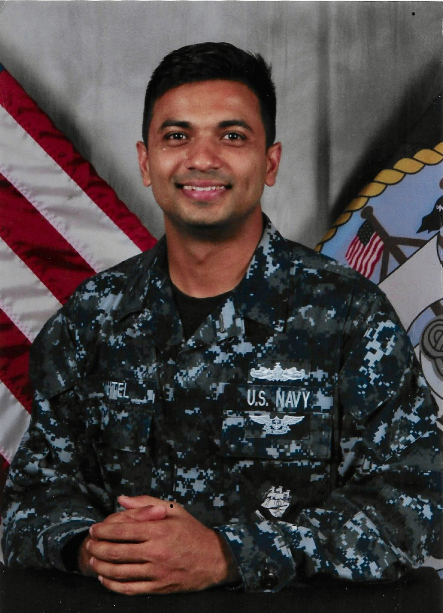
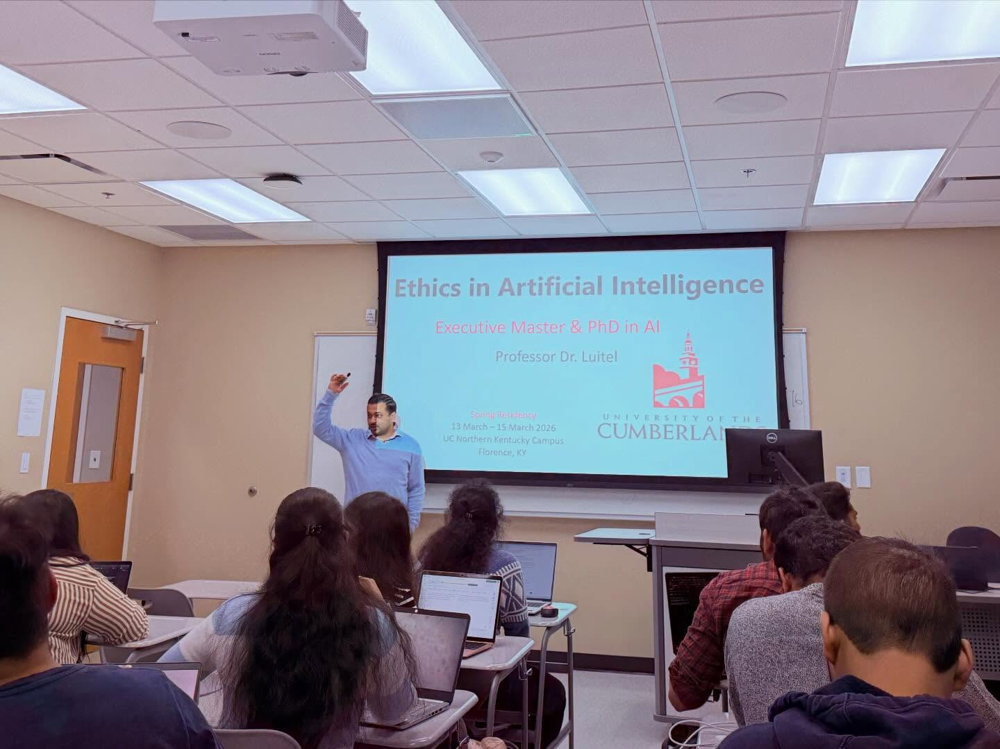

A career spent making trust something you can demonstrate.
Four settings, one problem. The Navy, a generative AI security product, a compliance program and a doctoral seminar all ask the same question in different vocabulary: what would it take for someone outside the room to believe this system does what we claim?
I hold two roles at once, and they are not separate careers. As Lead Technical Program Manager for Public Sector Security at N-able, I own security and compliance programs for platforms serving government and defense-adjacent customers, which means FedRAMP Moderate and CMMC 2.0 Level 2 are operational problems on my desk rather than abstractions. As Associate Professor of Artificial Intelligence at the University of the Cumberlands, I teach and advise doctoral students on the governance questions those programs raise.
Each role keeps the other honest. Teaching forces me to articulate why a control exists rather than simply implementing it. Practice keeps the seminar from drifting into positions that cannot survive a deadline.
Before this, I spent years at Microsoft in senior product and program roles across Security Copilot, Defender Threat Intelligence, and cloud and AI security. Security Copilot was the first generative AI security product to reach market. That distinction sounds like marketing until you sit in the room and realize there is no prior art for how Responsible AI review, privacy engineering and federal readiness should work for a product of that kind. Whatever we decided became the reference for what followed, which is a specific and uncomfortable kind of responsibility.
My first career was different in every respect except the underlying discipline. I served on active duty in the U.S. Navy and deployed overseas, in an environment where nothing is trusted to operate on the strength of an assertion. Verification is the condition of use. I have never encountered a compliance framework that improves on that idea.
How the pieces connect
Served on active duty and deployed overseas
Operational service in environments where documentation and verification determine what is permitted to run.
Harvard Kennedy School, then George Washington University
Public administration first, then engineering. Policy before systems, which is the reverse of the usual order and shapes how I read regulation.
Security Copilot, Defender Threat Intelligence, cloud and AI security
Responsible AI review, privacy engineering, compliance and federal and sovereign cloud readiness for the first generative AI security product on the market and the early agents built on it.
Lead Technical Program Manager, Public Sector Security
FedRAMP Moderate and CMMC 2.0 Level 2 program ownership for public-sector and defense-adjacent platforms.
Associate Professor of Artificial Intelligence
Designed Ethics in Responsible AI for the first PhD in AI cohort. Teaches and advises doctoral candidates in AI governance and cybersecurity.


Degrees
- Doctor of EngineeringThe George Washington University. Doctoral research modeled data-breach risk using machine learning applied to high-dimensional panel data.
- Master of Engineering, CybersecurityThe George Washington University.
- Master in Public AdministrationHarvard Kennedy School.
Where this work is going
Current attention is on AI agents: how identity, authorization and attribution behave when an agent acts across systems that were never designed to account for a non-human actor.